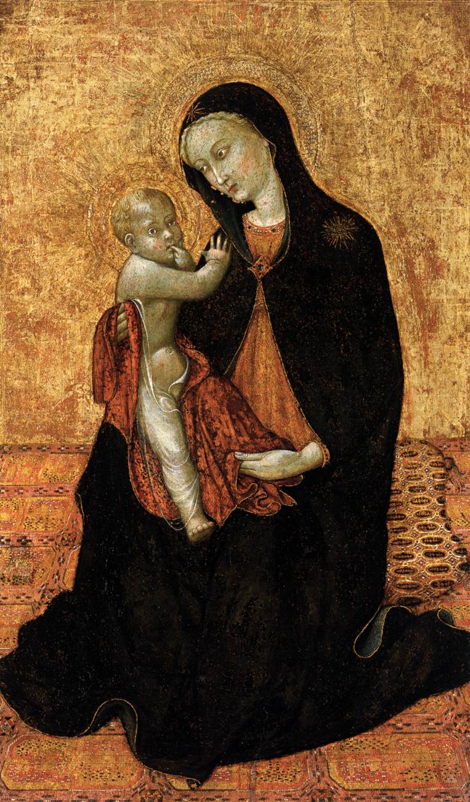
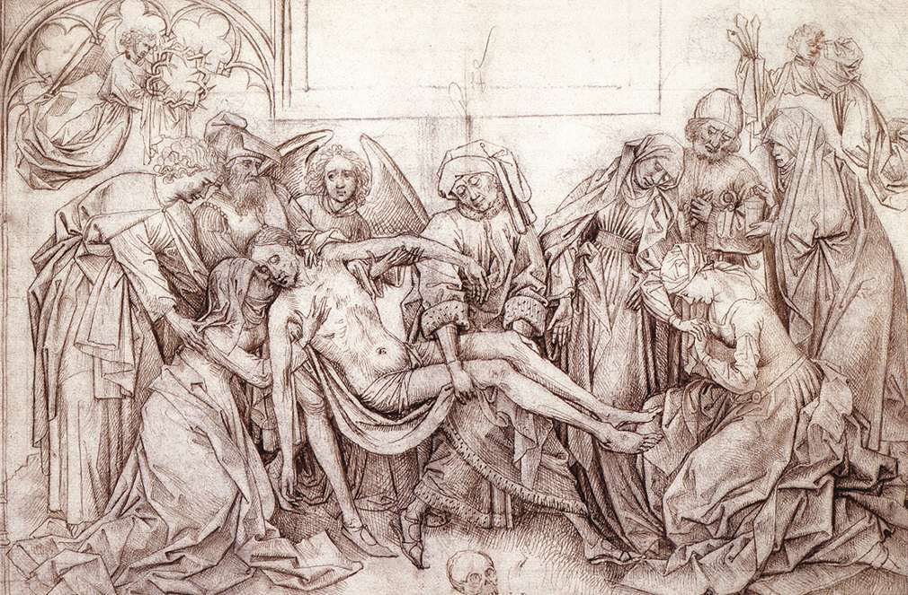
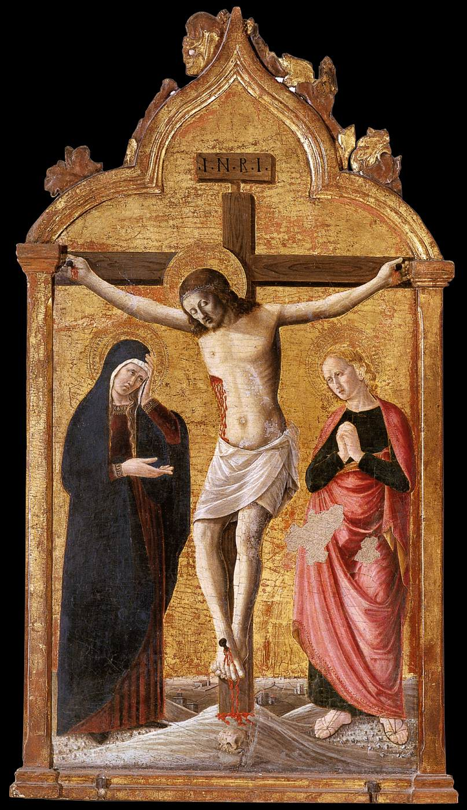

Course: Two Marys
Lecture #8: The Cult of Mary to the Present
NOTE: Text in Highlight is Optional
During the 13th and 14th centuries, as Greek philosophy again became known, it was meshed with the Biblical tradition of Women's creation from Adam's rib. In Plato, the male is by nature superior, and the female inferior, male-ruler, female subject.
The statement in Genesis 1:26 that male and female he created them was overlooked in favor of the creation of Eve from Adam's rib because it fit the traditional interpretations of women's place. This idea was part of pseudo-Paul's message about the church subject to Christ as wife is to husband.
The Virgin Mary was not identified with women in their subject aspect until the Franciscan order wrought a revolution in Christian thinking on the Incarnation in the 13th & 14th cent. Francis introduced humility, the humble earth, lowliness in the image of the bare ground. This was the core of the Franciscan Revolution.
The idea that the material world was transient and inferior colored the values that he and his order after him proclaimed. This was a heterodox view since self-abnegation has to be total. Francis welcomes the wrongdoing of others to accomplish the dissolution of personal desire.
The impact of the friar's new ethic on the cult of the virgin was profound, for they remolded her to their revolutionary ideals. In Art, beginning in the mid 14th century, the "virgin of humility" begins to appear. Mary is barefoot, on the ground with a baby on her knee. (figure 23). (Chichio-1425)

The image formed part of a movement towards direct, emotional involvement such as Francis himself experienced. It was Francis who first placed a manger in the woods at Greccio with animals beside and thus inaugurated the practice of the Christmas crib, transforming the mythological symbolism of byzantine nativity into a story of a struggling and roofless family.
With the baby now introduced into the crib it was a logical development of Franciscan piety that the Virgin should kneel in adoration before her newborn child.
St. Bridget of Sweden (d. 1373) a Franciscan Tertiary, had visions of Christ's birth. She bore him and then worshipped him. Bridget's visions swept Europe and influenced some of the loveliest 15th century paintings of the Nativity (col pl. II, f 2) (such as Robt. Campin's).
As Simone de Beauvoir has written: "for the first time in human history the mother kneels before her son; she freely accepts her inferiority. This is the supreme masculine victory, consummated in the cult of the Virgin--it is the rehabilitation of woman thru the accomplishment of her defeat."
The characteristics Christians were asked to exemplify-- poverty, humility, obedience, gentleness, docility, forbearance- are immediately classifiable as feminine, especially in the Mediterranean Catholic countries.
The more fervently religious the country --Spain, for example--the more the menfolk swagger and command, the more the women submit and withdraw and are praised for their Christian goodness. MACHISMO, ironically enough, is the sweet gentle virgin's other face.
THE CULT OF HUMILITY in practice meant that monks and women were to practice the Christian ideals. The double standard that expected the woman to be more virtuous than a man. She was the keeper of the husband's conscience--being moral enough for two.
This ideal was projected onto the Holy family that attributed the social customs of earth to heaven, that disrobed the Virgin of her regalia and exchanged typology and metaphysics for anecdote.
The cult of humility, understood as female submissiveness to the head of the house, set the seal on the Virgin's eclipse as a matriarchal symbol. No where can this be seen more clearly than in the rise of Joseph in importance from the end of the 14th century onward.
Previously shown asleep beside a rock in byzantine nativities, Joseph begins to occupy the center stage and to inspire a cult in his own right. His feast day has finally been set as March 19, but May 1 is called the feast of "Joseph the Worker'
Art from the 15th century on, began to pay tender attention to the daily details of the Holy Family's domestic life. 14th and 15th century art began to treat Calvary in terms of Jesus humanity, heightening the emotional tension. At this time, Death, suffering, and judgement were credible concerns in a Europe that had gone thru the devastating destruction of the Black Death beginning in 1349.
In 1453, the Ottoman Turks captured Constantinople and besieged Europe. This caused art to express this suffering. Now the agony of Jesus, wounded and crowned with thorns, called the Ecce Homo, and the figure of Mary holding her dead son, the Pieta, are introduced. MM and the Virgin Mary weeping under the cross (By Graenewald -- plate 19) was a new expression.
St. Teresa in the 16th century adopted Joseph as her personal patron "the father of my soul". By the 18th century, he was the presiding saint of 200 convents of her Carmelite order.
Molanus, who tried to cleanse Catholic painting after the reformation of paganism and superstition, metamorphosized Joseph from an old man into a young raven headed dynamic workman (Fig 25 -- By Murillo, 17th century). His virginity stemmed from a holy purpose, not old age.
The rise of Joseph's cult as the head of the Holy Family illustrates how Christian devotion can reflect and affirm the prevailing social mode. At Knock, now the most popular shrine of the virgin in Ireland, the devotions focus on the hardships of Irish mothers in their family kitchens.
THE ROSARY
People hungering for a private experience of God, such as Francis and others had had as well as the need to assert the legitimacy of Rome against the heretics, and the use of a religious practice as a battle standard were all combined in the church's fostering of devotion to the rosary, the necklace of beads on which the Hail Mary is recited over and over as a Mantra.
The chain of beads originated in Brahminic India, where it is still current in the worship of Vishnu and Shiva. Through Hinduism its use spread to Buddhism and later to Islam, where it is referred to as early as the ninth century.
Although the exact date of entry into western Christendom is not known, the crusaders are generally given the credit for spreading a habit picked up from both Muslims and Eastern Orthodox Christians who used knots to practice the Jesus Prayer.
Around 1470 the Dominican priest Alanus de Rupe (d. 1475) published a book which instantly awakened fervent belief in the powers of the rosary to obtain the virgin's mercy and protection.
In 1495 Pope Alexander VI --the first pope to mention the rosary--gave the Holy See's approval. The practice then spread like wildfire.
The full rosary now consists of 150 hail Marys arranged in 15 decades. For 10 hail Marys the reciter meditates on one mystery of the life of 1Jesus and Mary, then one Our Father, followed by the doxology, "Glory be. . ."
In practice, one cycle of either the sorrowful mysteries (which deal with Jesus passion and death), joyful (which deal with his conception and childhood), or glorious mysteries (Mary's assumption and Coronation as queen of Heaven --A Lammnus) 50 hail Marys is considered enough. The beads are actively holy in themselves, and are often among ones most treasured possessions.
Schematic diagram of the Catholic Rosary:*brown: Sign of the Cross; Apostles' Creed *blue: Our Father *blue/medium blue: introduction of the relevant Mystery; Our Father *pink: Hail Mary *pink/dark pink: Hail Mary; Glory Be; Fátima Prayer *yellow: Hail Holy Queen; Sign of the Cross
According to de Rupe 2 and 1/2 centuries later Dominic, while conducting the inquisition against the Albigensian heretics at the beginning of the 13th century, had been given the rosary in a vision by the Virgin herself, who told him that Christian men and women should invoke her aid on the beads.
MORE DEVOTIONS TO MARY
Because of the Golden Legend, already mentioned, in the 13th century, devotion to St. Anne, Mary's mother, sometimes riveled her daughter in the 15th century. The Golden legend had popularized the apocryphal tale of Annes's three marriages, each producing a daughter named Mary.
Poetry, also, emphasized not only Jesus suffering, but his mothers. "Mother, why have you come?/ Your agony and tears crush me; to see you suffer so will be my death."
or as the "Meditations" by Pseudo-Bonaventure said: "She hung with her son on the cross and wished to die with him rather than live any longer."
Most of the clergy of the time had little theological or scriptural training and until the printing press, it was not easy to find Bibles. Thus some 13th century admiration of Mary seems excessive as, for instance, Richard of St. Laurent:
"Our Mother who art in heaven, give us our daily bread"
"Mary so loved the world, that is, sinners, that she gave her only begotten son for the salvation of the world."
Applying to Mary what belonged to God, Richard justified his words by his ingenious argument that Mary the Mother was more merciful than Christ or the Father.
He even stated that "in the sacrament of her Son we also eat and drink her flesh and blood."
Another Franciscan wrote that Mary did not cry like other children and that she knew rhetoric, logic, physics and all other branches of knowledge w/o having to study them.--Insert Des. of Art By Van Weyden

Rogier Van der Weyden's: Descent from the cross, @1435, 7' x 8'
The problem was that these excess of Marion devotion was one of the reasons for the protestant reformation to begin.
Also called "Escorial Deposition". This picture shows an unprecedented depiction of Mary -- swooning.
In most paintings, such as Fra Giovanni Angelo D’Antonio "Crucifixion" painted the same year, Mary is piously kneeling or standing praying. Mary Magdalen, usually more prominent, is wrenching her hands.

Jesus and Mary are both central figures. Note repetition of their bodies positions, even of hands and arms. this is a very large painting, 6 1/2 feet x 8' with life sized figures located in small crypt in a chapel so viewer is close to picture.
It shows the pain and suffering of Mary with John the Evangelist catching her. Mary is almost as limp as Christ and can see example of her suffering in relationship to Christ. She becomes transformed into likeness of Christ the COREDEMPTRIX.
For the previous 2 centuries (12th and 13th) there has been literary precedent for this Mariology. This is the first painting to show this status of Mary.
REFORMATION/COUNTER-REFORMATION
By the 16th century, some influential Christians agreed that claims for Mary had become extreme. Chief among them was Erasmus of Rotterdam, who had been educated by the Brethren of the common life. In his early life he had written prayers in Mary's honor.
However, after a classical education and a deepened understanding of the Greek bible and the Fathers, he became more critical. He wrote several dialogues mocking popular devotional practices.
Like his friend, Thomas More, Erasmus aimed to instruct and to purify the faith, but he alienated many believers with his satire about pilgrimages. His intellectual elitism may have prevented him from seeing the value and community building value of pilgrimages which were a genuine expression of popular piety.
Erasmus's satire was too sophisticated for men embroiled in bitter controversy. Catholics found him subversive; protestants considered him evasive. However, he was close to the protestant reformers on central biblical questions.
Both Erasmus and Martin Luther found errors in the Latin Vulgate which were central to understanding Mary's role. At the annunciation, the greeting to here was not to one "full of Grace" but "full of favor", a more accurate translation of Luke 1:28.
Both scholars found that in the Magnificat she refers to herself as "lowly" not "humble", more a class than a character description. Today, both Catholic and protestant scholars agree but in the 16th century, nothing could make them agree.
MARTIN LUTHER
Mary was not central to Luther's concern, but he had to deal with her. He accepted that she was perpetually a virgin and called her God-bearer, as well as she was the fruit of the promise to Abraham that his seed was blessed and would multiply.
Luther insists that we are to see "nothing but the child which is born. .that all created things should be as nothing compared with this child,. Then he strikes his main theme: Our honor is greater than that of Mary who mothered Jesus’ body.
Christians, boast in your heart: "I hear the Word that sounds from heaven and says this child who is born of the virgin is not only his mother's son. I have more than the mother's estate. He is more mine than Mary's, for he was born for me.
Other protestant reformers like Calvin and Zwingli held similar views. They believed in Mary's perpetual virginity but rejected any need for her intercession.
By his diminution of Mary, Luther perhaps unconsciously denied the feminine dimension of the sacred and eliminated the one symbol that had for many embodied it.
However, the reformation brought lasting improvements to church and society by rehabilitating marriage and expanding education to all, including women. Paradoxically, as the Reformation took power away from Mary, it put more power into the hands of ordinary women, reversing the decisions of the 4th century fathers.
Procreation was not the only reason for sex but mutual love of the spouses was just as important (Westminster con. 1646-7)
The reformers insisted on the priesthood of all believers, meaning that the laity was much more important. Most important, was the fact that the Bible was made available in the vernacular so that all could read, study and preach from it.
The Reformers pressed for schools which included both boys and girls and all children were required to attend. However, women were still limited as the rule of the father in families replaced the rule of the clergy.
Viewed from the vantage point of intellectual and religious history, the Reformation was a decisive turning point for women and very positively affected their ability to come to feminist consciousness.
The people of the reform reacted with an iconoclasm that the reformers didn't expect. They saw the implications of the images of Mary being associated with royalty and destroyed them. In France, the Protestant Huguenots fury was aimed at the black Madonnas, considered evidence of "gothic superstition". At least 25 were destroyed in the 16th century.
Protestants and Catholics would divide the poles of taste in the arts with protestants stressing primarily the verbal and musical (with Bach's masses and chorales as its greatest expression), the Catholic side producing a luxuriant visual art, evident in baroque painting and architecture.
Also, the protestants opted to drop the apocryphal books which were part of the Greek Septuagint, thus eliminating much of the writings associated with Mary and wisdom.
CATHOLIC COUNTER-REFORMATION
The COUNCIL OF TRENT (1545-1563) was the attempt of the Catholic church to also carry out reform. Greater emphasis was placed on preaching, more physical barriers between priest and people were removed and the apocryphal legends and matrilineal image associated with the kinship of St. Anne was condemned.
But, because of its emphasis on visual imagery, it indirectly encouraged pictures, etc. of St. Anne. Trent's emphasis on teaching the catechism at home placed new responsibilities on Catholic mothers, who found a model in her. (plate 20). In most annunciation scenes Gabriel now finds Mary reading rather than spinning or weaving.

Unfortunately, the struggle with Protestantism fostered a defensive attitude (fortress mentality) in Catholicism, evident in scriptural scholarship for the next 400 years.
Since the protestants denounced the Rosary, Pope Pius V officially recognized it. He also instituted the feast of the Rosary. The Jesuits saw in the renewal of Marian devotion the best way to repair the damages of the Reformation.
Defensiveness caused a break with Medieval art. in France the Reformation put an end to the long tradition of legend, poetry, and dream by forcing the Catholic church to watch over all aspects of it thought and to turn strongly in upon itself. Even the "Golden Legend" was now banned as a source for art.
Since protestants had declared war on images, such as the black Madonnas, enlightened Catholics did not want to hand them weapons. Thus, Trent laid down the rule at its last session that anything which represents false doctrines and might be the occasion of grave error to the uneducated was forbidden.
Thus, Trent engendered a more literal rendition of heavenly themes, avoiding any legendary material. Pictures of a younger Mary alone, without Anne and Joachim, were fostered. This served to detach her from their sexuality and thus provided visual support for the popular belief in the Immaculate Conception. (see plate)
IGNTIUS OF LOYOLA (d.1556)
Founder of the Society of Jesus, or the Jesuits, Ignatius took into account the criticisms of the Reformers against the older religious orders. They demanded longer preparation for the priesthood, avoided excessive asceticism, wore regular clothes, and dedicated themselves to humanistic teaching and the preparation of priests.
Erasmus goal of Christ and all else subordinated to that was the guide to the Christian life. They were to learn to follow the guidance of the Holy Spirit. In the aim of centering their lives in Christ, R.C. and Lutherans had the same focus.
What was different was that, for Ignatius, Mary's place was central in God's plan and she stood for all human beings. In the 30 day Ignatian retreat one meditation involves visualizing 3 scenes: 1. Mary's consent to the angel that will make her the mother of God, 2. a representative group of humans, all caught up in sin, and finally, God in heaven looking compassionately down on humanity, awaiting the redemptive birth Mary's consent makes possible.
There was no schism in the Eastern Orthodox church. Mother and Child are seen enthroned in much the same way then as in the 6th & 7th centuries.
The many poses of Mary standing as guide, pointing to her son who rests on her left arm, are almost exactly the same in 16th century Smolensk as in ninth century Byzantium.
MARY AT GUADALUPE -- (Dec. 9, 1531)
During this same time period, the European countries were expanding to Africa, the Americas and Asia and colonial peoples were affected also.
At the height of its power, Spain transported militant Catholicism to the indigenous peoples of South and central America. To the Spanish, Mary was La Conquistadora, casting dust into the Indians eyes during crucial battles.
In March, 1519, the Spanish won a crucial victory at Tabasco and erected a typical image of the immaculate conception in place of the Mayan moon goddess. The indigenous chiefs took instruction in the Catholic faith believing they had witnessed the death of their world.
In the 50 years after the conquest, the Mayan and Aztec populations declined from more than 70 million to about 10 million due to disease, overwork, etc. Women were raped and chose not to give birth, and many men committed suicide.
The Indians were in danger of losing their whole symbol system and it would be the Lady of Guadalupe, not the missionaries, who changed the situation.
According to legend, Mary appeared to Juan Diego, a poor Indian, on December 9, 1531, a mere ten years after the conquest, though it would take decades for the appearance to reach the wider community.
The reason that Mary's apparition was so meaningful to the Aztecs was that she could be seen as one of their goddesses returned, now showing her favorable, nurturing side. During the conquest the Aztec mother goddess had shown her terrible aspects when it seemed she demanded human sacrifice.

THE LEGEND
A little Indian woman appeared to Juan in a village near Mexico City at daybreak at the foot of the small hill Tepeyac. He heard birds singing, then noticed a white, shining cloud, with a beautiful rainbow coming from the middle of the cloud.
He heard a woman call his name, speaking in the native Nahuatl tongue, telling him that she wanted a church build on this hill where, she said, "I will hear your weeping and prayers to give you consolation and relief. I will show my loving favor and the compassion I have for the natives and for those who love and seek me".
The lady told him she was "the ever-virgin Mary, mother of the true God by whom all live" but she used the Aztec name Tonantzin, or Mother of the Gods.
She told him to go to the bishop, but he refused to see Juan till he begged her to send someone else. On December 12, Juan found Castilian roses blooming on the cold barren hill of Tepeyac.
He gathered them into his cloak and went to the city. The lady told him not to open it to anyone but the bishop. When he did so, the bishop fell to his knees for the image of Our Lady of Guadalupe was printed on it just as Juan had described.
The cloak now hangs now in the basilica in Mexico city that bears her name. Juan's Nahuatl name for Mary: Tlecuauhtlacupeuh (roughly, St. Mary who appeared on the rocky summit) sounded very much like "Guadalupe" in Spanish, hence the name.
The impact of her appearance was tremendous. Indigenous people were convinced that the Virgin did not have the same attitude to them as their white oppressors. Her appearance made it possible for them to accept the religion of their conquerors since Mary gave them back their self-respect.
The church was built on Tepeyac, although some churchmen long suspected that the Indians had simply translated their ancient deities into this feminine form."
No attempt to explain this encounter has been successful. Efforts have been made to interpret the stars on the lady's robe as astrological evidence of her dual manifestation as Great Mother and the Woman of revelation. Rays of the sun, the Aztec symbol for God, emanated from her robe.
Whatever happened, Our Lady of Guadalupe united the Nahuatl and Spanish understandings of God. Indians became active Xians. Mary gave the strength to endure continuing oppression. Guadalupe was ultimately a complex and mysterious event, whose effects are still unfolding.
The historical irony is that "the little dark one" was also accepted by the Spanish. The Spanish, by the 17th century, saw the imagery as a promise of new birth in the Mexican nation and provided a way to make sense of a community that was neither Spanish nor Indian, but Mexican.
Her appearance became a sign that the conquest had been ordained by God precisely in order that this "most divine image" could appear there. Tepeyac was the new Mt. Zion; Mexico was the promised land, and the new world of Christ was replacing the old world of Adam.
Her appearance gradually extended her significance to the nation as a whole and to all Latin America. Many revolutionaries carried her image on their banners, poets wrote major liturgical compositions, musicians wrote songs, etc.
In our day, Guadalupe has been showered with an embarrassing excess of ecclesiastical approval in an attempt to control her interpretation.
At the world Marian congress in July, 1959, she was hailed as the Empress of the Americas. However, most adoration for her takes place in her shrines in ordinary homes all over Mexico.
Guadalupe is one of many images of Mary that became symbols of compassion to the conquered peoples. In Brazil, the patron saint is Our Lady of the Immaculate Conception, found blackened by the water in the Paraiba River. Brazilian slaves believed this Virgin "disapproved of slavery and identified with them thru her blackness."
As Marion images appeared throughout Latin America, elements of the Mother Goddess common to all these indigenous people merged with the Christianity of their conquerors just as they had in medieval Europe. In each country were Mary became patroness, her own name and story became identified with the hopes of the people.
POST REFORMATION
If the image of Mary contributed to the division of Christianity during the Years of the Reformation, by the 19th century that division had hardened. Both Catholics and protestants lacked balance in their approach to Mary, largely because of mutual isolation.
The 17th century had been a period of devastation in Europe with the 30 years’ war, largely powered by religious division. Most Catholic theologians appealed to a private, emotional spirituality, asking believers to see their own sufferings as insignificant in light of those of Jesus and Mary.
Jesus and Mary were seen more and more as of one heart and mind. Christ, abandoned by his father, turned to his mother in the crucifixion whose sufferings caused him more pain than his own. At that moment he ceded to her the right to dispense all his treasures. "He wills what she wills."
Devotion to the suffering hearts of Jesus and Mary and the need for sacrifice and reparation for sins were also encouraged by the growing number of religious order of men and women. This piety increased greatly in the 1670's after the appearance of the bleeding and suffering Christ to Margaret Mary Alacoque, A visitation sister in France.
Devotion to the sacred heart, already practiced in convents and monasteries, became widely popular. Even more extreme was the "slavery" to Mary advocated by de Montfort (d. 1716), author of "True devotion to the Blessed Virgin" I am all yours") provided John Paul II with the motto for his coat of arms.
De Monfort claimed that salvation was complete obedience to Mary and we cannot dare approach Christ on our own.
At. Alphonsus Liguoris (d. 1787) The Glories of Mary gave further support to this dependence on Mary. The most popular modern book of Marian devotion, it takes counter-reformation distortion for granted: "All graces that God gives to men pass thru the hands of Mary.
Mary is the wise wife of an angry God-husband who, w/o her, might at any time do something he would later regret. Mary is the source of all mercy and Jesus seems almost an adjunct beside her and her role tends to replace that of the Holy Spirit: "Mary has only to speak and the Son executes all.'
FRENCH REVOLUTION such excesses led to a reaction that was both political and religious. Many images of Mary that survived the earlier ravages, including black Madonnas, were now burned or hacked to pieces.
Marianne, the allegorical figure personifying the French republic, the "Virgin of Liberty, deliver us from King and popes! Virgin of Equality, deliver us from aristocrats."
Parodying the Ave Maria, revolutionaries sang; "Hail Marianne, full of strength, the people are with thee, blessed is the fruit of thy womb, the Republic."
THE MIRACULOUS MEDAL -- in 1830 an angel appeared to a Catherine Laboure, daughter of a French peasant and reaffirmed the long held popular belief in Mary's immaculate conception.
She was told to go the chapel where she saw Mary sitting in a chair by the alter. Mary predicted the King of France's downfall. In November, Mary appeared again holding a golden ball with letters saying: "O Mary, conceived w/o sin, pray for us who have recourse to thee."
Mary showed her what the medal should look like and that it should be struck. Mass production of the Miraculous medal began. Within Catherine's lifetime over a billion copies were circulated worldwide.
IMMACULATE CONCEPTION: Thus, in 1854, with such widespread response, pope Pius IX gave the doctrinal definition of the Immaculate conception. When this occurred, it stunned protestants and startled Eastern Orthodox who feared that it denied Mary's humanity and separated her from the rest of creation.
In broader terms it expressed the papacy's need to defend its authority to define truth in the modern world by linking itself as the mother and teacher of all churches with Mary as the mother and teacher of the faithful.
But, it was also a victory for the affective over neat rational systems; it was a liberation of the human spirit, a "Franciscan thing"
ASSUMPTION OF THE VIRGIN MARY - The momentum of Marian doctrine continued into the 20th century and the reign of Pius XII, who proclaimed the second and related dogma of the bodily Assumption of Mary into Heaven. (col plate 7)
There were many arguments for the assumption, though none of them were biblical or apostolic. One was based on the fact that no one had ever located Mary's burial place or tomb.
Even when such a doctrinal decree is issued only the statement of it, and not the reasons given is held to be incontrovertibly true.
The only two times a pope has spoken ex-cathedra, ie, as infallible, were these two pronouncements about Mary.
When the Assumption was pronounced dogma, the Orthodox were not disturbed ast they have held that belief.
Looking back the proclamation in 1950 of the doctrine of the assumption seems to have been the climax of what was largely a 19th century Catholic obsession with Mary.
Marian apparitions at Lourdes and elsewhere (will discuss in last two lectures), and attempts to maximize Mary's role in God's plan of salvation, confirmed protestant distrust of Marian piety.
JOHN CARDINAL NEWMAN (1800ff) however, there were a few moderate thinkers who suggested other roles for Mary. John Cardinal Newman, a convert from Anglicanism and probably the most clear sighted Catholic thinker of the century, developed a sober conception of Mary's place that was restrained and attentive to early Christian traditions.
He was uncomfortable with sentimental piety, but his historical studies slowly began to convince him that Mary played a central role in church tradition.
To Newman, Mary represented the necessary attitude to faith "not only. .of the unlearned, but also of the doctors of the church who have to investigate, and weigh, and define, as well as to profess the Gospel."
In response to excess of Marion devotion he said: "I will say plainly that I had rather believe that there is no God at all, than that Mary is greater than God." He went on to say:
"she is the great exemplar of prayer in a generation which emphatically denies the power of prayer in toto, which determines that fatal laws govern the universe, that there cannot be any direct communication between earth and heaven, that God cannot visit his own Earth, and that man cannot influence his own providence."
In 1879, late in life, pope Leo XIII made him a cardinal. His views gradually were accepted by Catholic theologians, who ratified them in the second Vatican Council in the early '60s, following his lead in seeing Mary as the human companion and model for all believers, best understood within an overall understanding of the church.
CROSSING BOUNDRIES - 19th century
Starting from different assumptions, the mostly protestant culture of England and the U.S. tended to idealize women int the "cult of true womanhood".
Because Mary seemed so much like the Victorian ideal, especially because of her maternity, she began to receive a positive reception among some distinguished protestant writers.
As we discussed with Mary Magdalen, this tendency to polarize women into virgin/whore, or good/bad and describing prostitutes as "magdalens".
AN ALTERNATIVE VIEW -- such as the Poet Christina Rossetti, a devout Anglican, saw in Mary, instead of a model mother, saw her as model of their own celibate state, which many found more compatible for spiritual growth than the married state.
She saw a trinity of women--Eve, Mary and Mary Magdalen and felt more drawn to Eve and MM, but she used all three women as positive possibilities of the feminine.
ELIZABETH CATY STANTON, initiator of the "Women's Bible" suggested that the Catholic church had at least "in its holy sisterhoods" and its "worship of the Virgin Mary, mother of Jesus...preserved some recognition of the feminine element in its religion; but from Protestantism it is wholly eliminated."
In retrospect, what is most extraordinary about the role of Mary in the 19th century is that she again succeeded in crossing line of faith, class, and society.
Tho the doctrine of the immaculate conception, apparitions at Lourdes, etc. seemed to confirm Mary as exclusively a catholic symbol, her image also appealed powerfully to a wide range of Victorian women who saw in her not merely the ideal woman but hints of the feminine divine.
These 19th century responses also bore the seeds of historical demands whose reverberations are far from complete. Ideas of progress and equality that had been the source of nationalistic wars and labor agitation now began to suggest the need for equality between men and women.
Nowhere was that connection more forcibly made than in Sojourner Truth's outburst from the floor at the Women's rights convention in 1851:
"That little man in black there, he says women can't have as much rights as men cause Christ wasn't a woman. Where did you Christ come from? ... From God and a woman! Man had nothing to do with Him."
This striking and positive connection of the role of Mary with the condition of women prepared the way for our century's critique of the paternalistic exploitation of her image.